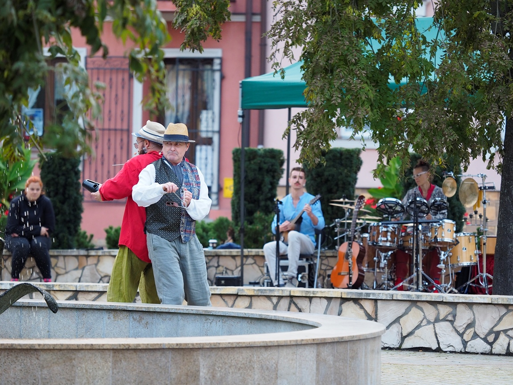

Kompozycja
Specjalizuję się w kompozycji muzyki teatralnej, a szczególnie bliska jest mi forma piosenek — w ostatnich latach napisałem ich ponad 70, głównie na potrzeby spektakli. Poniżej zamieszczam wybrane realizacje.
Spektakle dla dorosłych
-
„Tam, gdzie umierają sny”
Spektakl-koncert z muzyką na żywo: kompozycja, aranżacja i kierownictwo muzyczne czteroosobowego zespołu (saksofony, gitary, bas, perkusja).

-
„Powłoki”
Muzyka do futurystycznego spektaklu oparta na syntezatorach i mocno inspirowana stylistyką lat osiemdziesiątych.
-
„Pożądliwość krótka jak lato”
Półimprowizowana muzyka na żywo (gitara, mandolina, flet, klarnet) stworzona we współpracy z Gertą Szymańską (perkusjonalia) do spektaklu opartego na tekstach Szekspira.
-
„Teatralny Hyde Park: Zielona Gęś”
Skomponowanie muzyki i akompaniament na gitarze klasycznej do sześciu piosenek opartych o teksty K. I. Gałczyńskiego.
Spektakle dla dzieci
-
Seria spektakli muzyczno-edukacyjnych
Spektakle wystawiane w żłobkach i przedszkolach. Chwytliwa muzyka dopasowana do specyfiki najmłodszych widzów.
Przykładowe piosenki
- Nagranie 1 — link wkrótce
- Nagranie 2 — link wkrótce
- Nagranie 3 — link wkrótce
-
„Detektyw Pozytywka”
Kameralna muzyka ilustracyjna wykorzystująca sample akustycznych instrumentów inspirowana kreskówkami, z wyraźnymi motywami towarzyszącymi różnym postaciom.
Poza muzyką teatralną, mam na koncie również utwory z zakresu muzyki rozrywkowej, filmowej, ilustracyjnej, programowej, a także instalację dźwiękową. W razie zainteresowania usługami zapraszam do kontaktu — udostępnię wówczas demo spersonalizowane pod charakter planowanego dzieła.